Tema CS7: Gráficos y animaciones
1 Gráficos en el plano con plot2d
1.1 Coordenadas cartesianas
Ejercicio 1.1. Dibujar la gráfica de sin(2*x) para x entre -2*pi y 2*pi.
(%i1)
wxplot2d(sin(2*x),[x,-2*%pi,2*%pi])$
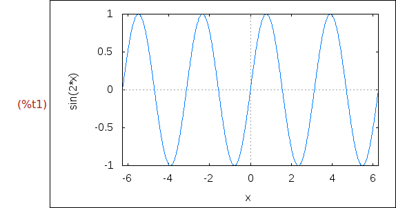
Ejercicio 1.2. Dibujar las gráficas de x^2 y de sqrt(2*x) para x entre -2 y 2.
(%i2)
wxplot2d([x^2,sqrt(2*x)],[x,-2,2])$
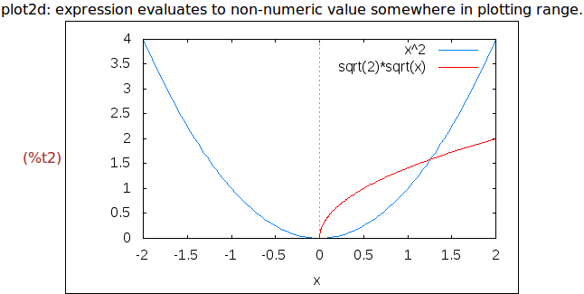
Ejercicio 1.3. Dibujar la gráfica de x/(x^2-4) para x entre -6 y 6 e y entre
-6 y 6.
(%i3)
wxplot2d(x/(x^2-4),[x,-6,6],[y,-6,6])$
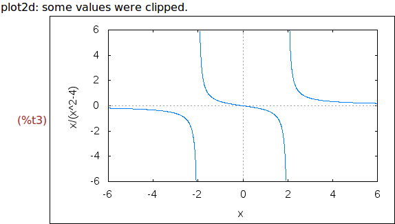
Ejercicio 1.4. Dibujar la gráfica de x/(x^2-4) para x entre -6 y 6 e y entre
-6 y 6 con ambos ejes con el mismo tamaño en pantalla.
(%i4)
wxplot2d(x/(x^2-4),[x,-6,6],[y,-6,6],
[gnuplot_preamble, "set size ratio 1;"])$
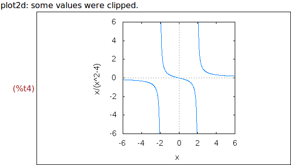
Ejercicio 1.5. Dibujar la gráfica de x/(x^2-4) para x entre -6 y 6 e y entre
-6 y 6 con una malla.
(%i5)
wxplot2d(x/(x^2-4),[x,-6,6],[y,-6,6],
[gnuplot_preamble, "set grid;"])$
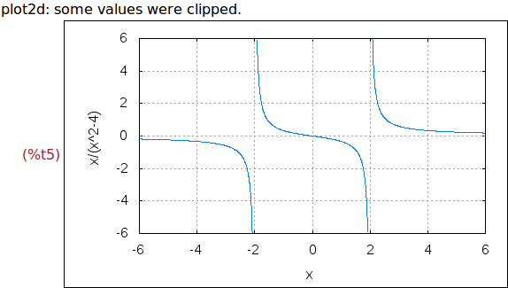
Ejercicio 1.6. Dibujar las gráficas de sqrt(1-x^2) y de sqrt(1-x^2) para x e y
entre -1 y 1.
(%i6)
wxplot2d([sqrt(1-x^2),-sqrt(1-x^2)],[x,-1,1],[y,-1,1])$
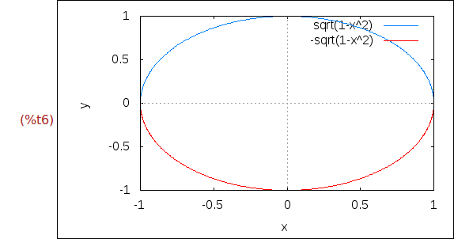
Ejercicio 1.7. Dibujar las gráficas de sqrt(1-x^2) y de sqrt(1-x^2) para x e y
entre -1 y 1 con ambos ejes con el mismo tamaño en pantalla.
(%i7)
wxplot2d([sqrt(1-x^2),-sqrt(1-x^2)],[x,-1,1],[y,-1,1],
[gnuplot_preamble, "set size ratio 1;"])$
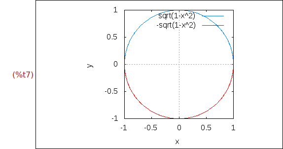
1.2 Gráficas de funciones definidas a trozos
Ejercicio 1.8. Dibujar la gráfica de la función
f(x) = sqrt(-x), si x<0
= x^3, e.o.c.
(%i8)
f(x):= if x<0 then sqrt(-x) else x^3$
wxplot2d(f(x),[x,-9,9],[y,-1,6])$
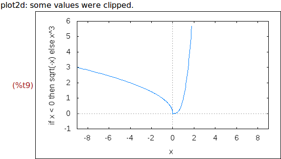
1.3 Gráficos en coordenadas paramétricas
Ejercicio 1.9. Un astroide es una curva trazada por un punto fijo de un círculo
de radio r que rueda sin deslizar dentro de otro círculo fijo de radio 4r.
Sus ecuaciones paramétricas son:
x = cos(t)^3
y = sin(t)^3
Dibujar un astroide.
(%i10)
wxplot2d(['parametric, cos(t)^3, sin(t)^3, [t, 0, 2*%pi], [nticks, 300]])$
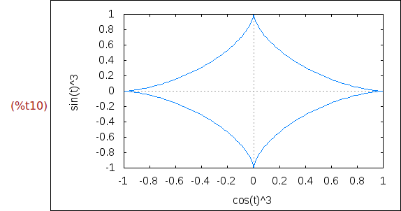
1.4 Gráficas de curvas poligonales
Ejercicio 1.10. Dibujar la recta que une los puntos (0,6) y (5,1).
(%i11)
wxplot2d([discrete,[0,5],[6,1]], [x,-5,5])$
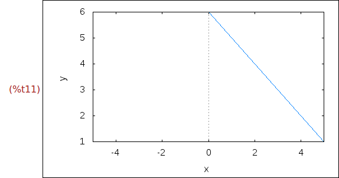
(%i12)
wxplot2d([discrete,[[0,6],[5,1]]], [x,-5,5])$
Ejercicio 1.11. Dibujar la recta que une los puntos (0,6), (5,1) y (8,3).
(%i13)
wxplot2d([discrete,[0,5,8],[6,1,3]], [x,-5,10])$
(%i14)
wxplot2d([discrete,[[0,6],[5,1],[8,3]]], [x,-5,10])$
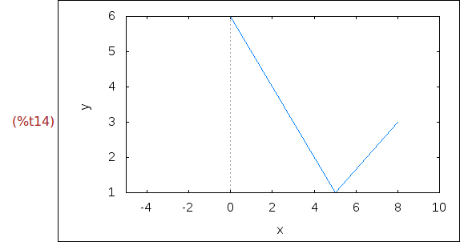
Ejercicio 1.12. Dibujar el rombo de vértices (−1,0), (0,−2), (1,0) y (0,2).
(%i15)
wxplot2d([discrete,[-1,0,1,0,-1],[0,-2,0,2,0]], [x,-5,5])$
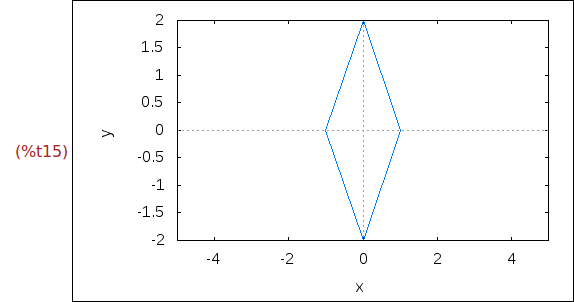
Ejercicio 1.13. Dibujar los puntos (0,0), (2,0) y (2,2).
(%i16) xy:[[0,0],[2,0],[2,2]]$
(%i17)
wxplot2d([discrete,xy],[style,points])$
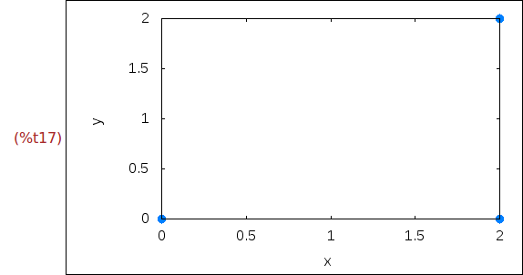
Ejercicio 1.14. Dibujar los puntos (0,0), (2,0) y (2,2) con ancho 10 y color
rojo.
(%i18)
wxplot2d([discrete,xy],[style,[points,10,2]])$
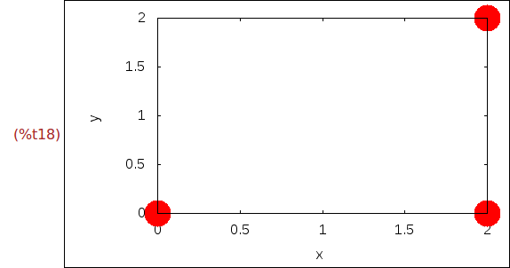
Ejercicio 1.15. Dibujar el triángulo rectángulo de vértices (0,0), (2,0) y (2,2)
con ancho 5 y los lados en rojo.
(%i19)
wxplot2d([discrete,[0,2,2,0],[0,0,2,0]],[style,[lines,5,2]])$
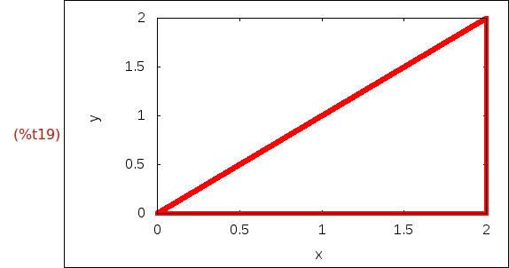
Ejercicio 1.16. Dibujar el triángulo rectángulo de vértices (0,0), (2,0) y (2,2)
con la x entre -3 y 5, la y entre -1 y 3, el ancho 5 y los lados en verde.
(%i20)
wxplot2d([discrete,[0,2,2,0],[0,0,2,0]],[x,-3,5],[y,-1,3],[style,[lines,5,3]])$
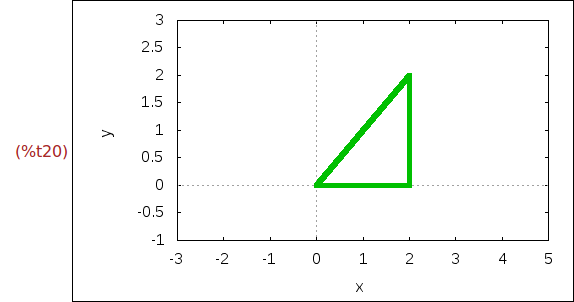
Ejercicio 1.17. Dibujar el triángulo rectángulo de vértices (0,0), (2,0) y (2,2)
con la x entre -3 y 5, la y entre -1 y 3, el ancho 5 y los lados en rojo y los
vértices como puntos azules.
(%i21)
wxplot2d([[discrete,[0,2,2,0],[0,0,2,0]],[discrete,xy]],
[x,-3,5],[y,-1,3],
[style,[lines,5,2],[points,5,1,1]])$
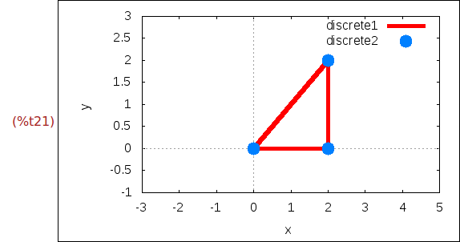
2 Gráficos con draw
Ejercicio 2.1. Cargar el módulo draw.
(%i22) load(draw)$
Ejercicio 2.2. Definir coseno como el objeto que correpondiente al gráfico
en azul de la función cos(x) para x entre 0 y 4*%pi.
(%i23)
coseno:gr2d(
color=blue,
explicit(cos(x),x,0,4*%pi))$
Ejercicio 2.3. Dibujar el gráfico de coseno.
(%i24)
wxdraw(coseno)$
Ejercicio 2.6. Dibujar en rojo el gráfico de sen(x) para x entre 0 y 4*%pi
(%i25)
wxdraw2d(
color=red,
explicit(sin(x),x,0,4*%pi))$
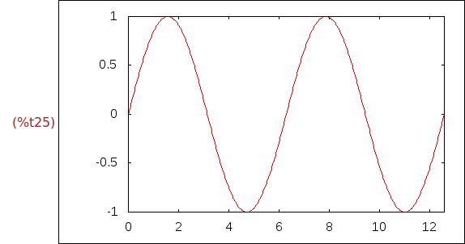
Ejercicio 2.7. Dibujar la elipse de ecuación
x = 2*cos(t),
y = 5*sin(t)
(%i26)
d1: gr2d(title="Elipse",
nticks=30,
parametric(2*cos(t),5*sin(t),t,0,2*%pi))$
(%i27)
wxdraw(scene1)$
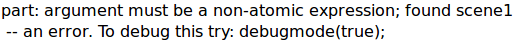
(%i28)
wxdraw2d(
title="Elipse",
color=blue,
nticks=30,
parametric(2*cos(t),5*sin(t),t,0,2*%pi))$
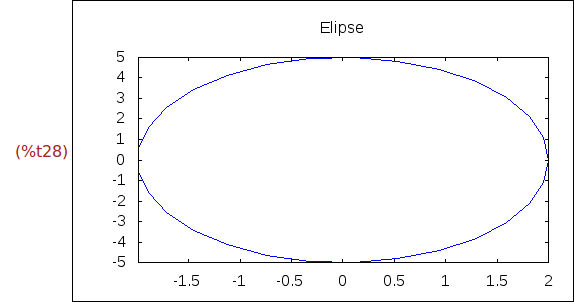
Ejercicio 2.8. Dibujar las gráficas de x^2, para x entre -1 y 1, y de la curva
definida por
x = 2*cos(t),
y = 5*sin(t)
(%i29)
wxdraw2d(
color=red,
explicit(x^2,x,-1,1),
color=blue,
nticks=30,
parametric(cos(t),sin(t),t,0,2*%pi))$
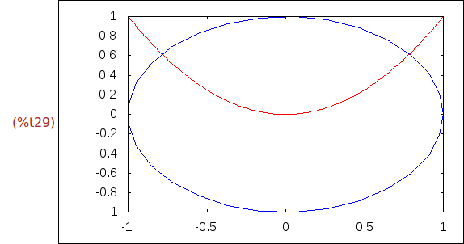
Ejercicio 2.9. Dibujar las gráficas de cos(x), para x entre 0 y 4*pi, y de x^3,
para x entre -5 y 5 en el marco común [0,pi]x[-2,2].
(%i30)
wxdraw2d(
color=blue,
explicit(cos(x),x,0,4*%pi),
color=red,
explicit(x^3,x,-5,5),
xrange=[0,%pi],yrange=[-2,2])$
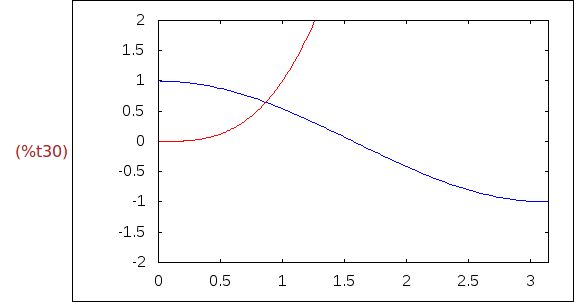
Ejercicio 2.10. Dibujar la gráfica de la función implícita definida por
x*y=1
para x e y entre -3 y 3. Además dibujar una malla y titular la ventana como
"Hipébola".
(%i31)
wxdraw2d(
color=blue,
nticks=100,
implicit(x*y=1,x,-3,3,y,-3,3),
grid=true,
title="Hipérbola")$
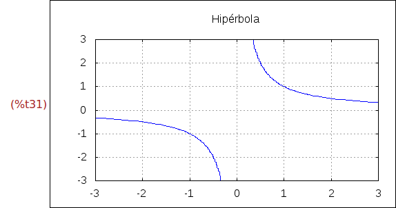
Ejercicio 2.11. Dibujar la gráfica de e^(x(2), para x entre -1 y 2. Además,
etiquetar el eje x con "Tiempo", el eje y con "Habitantes" y la ventana con
"Evolución de la población".
(%i32)
wxdraw2d(
color=blue,
explicit(exp(x/2),x,-2,2),
xlabel="Tiempo",
ylabel="Habitantes",
title="Evolución de la población")$
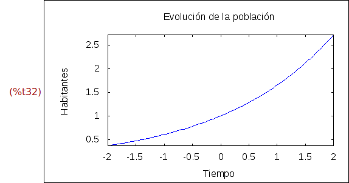
Ejercicio 2.12. Dibujar la gráfica de cos(x), para x entre 0 y 10, rellenado de
azul la región entre la curva y la parte inferior de la ventana.
(%i33)
wxdraw2d(
fill_color=blue,
filled_func=true,
explicit(cos(x),x,0,10))$
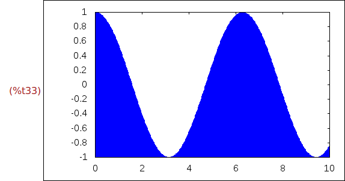
Ejercicio 2.13. Dibujar la gráfica de cos(x), para x entre 0 y 10, rellenado de
azul la región entre la curva y la gráfica de sen(x).
(%i34)
wxdraw2d(
fill_color=blue,
filled_func=sin(x),
explicit(cos(x),x,0,10))$
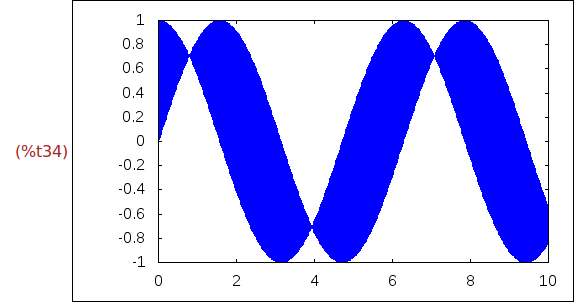
Ejercicio 2.14. Dibujar la gráfica de cos(x), para x entre 0 y 10, rellenado de
azul la región entre la curva y la gráfica de sen(x). Además, dibujar de rojo
y grosor 5 la gráfica de sen(x) y de amarillo y grosor 5 la gráfica de cos(x).
(%i35)
wxdraw2d(
filled_func=sin(x),
fill_color=blue,
explicit(cos(x),x,0,10),
filled_func=false,
color=red,line_width=5,
explicit(sin(x),x,0,10),
color=yellow,line_width=5,
explicit(cos(x),x,0,10))$
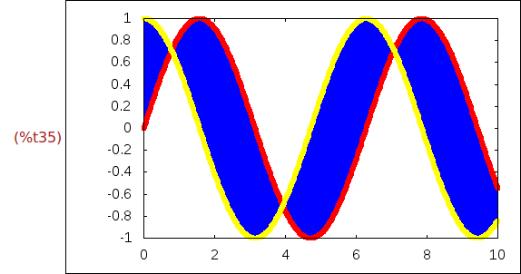
Ejercicio 2.15.a. Definir la función f(x) = x^3-2*x^2-x+2
(%i36) f(x):=x^3-2*x^2-x+2$
Ejercicio 2.15.b. Definir la función df(x) que es la derivada de f(x).
(%i37) define(df(x),diff(f(x),x))$
Ejercicio 2.15.c. Definir la función tangente(x,a) que es la tangente a f(x) en
el punto de abscisa a.
(%i38) tangente(x,a):=f(a)+df(a)*(x-a)$
(%i39)
tangente(x,a);
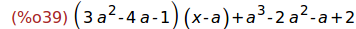
Ejercicio 2.15.d. Dibujar la gráfica de f(x) y su tangente en x=1. Además,
escribir las leyendas "funcion" para f(x) y "tangente" para su tangente y
dibujar la malla.
(%i40)
wxdraw2d(
color=blue,key="funcion",
explicit(f(x),x,-2,3),
color=red,key="tangente",
explicit(tangente(x,1),x,-2,3),
grid=true)$
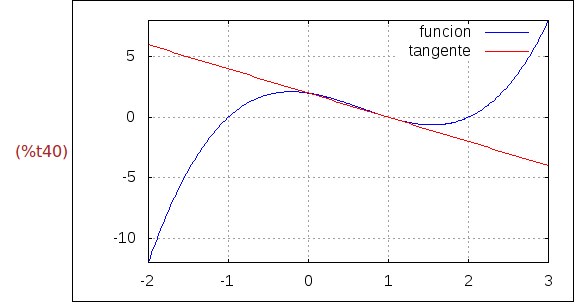
Ejercicio 2.16. Dibujar las gráficas de las funciones implícitas
y^2=x^3-2x+1
x^3+y^3 = 3xy^2-x-1
Además, la primera dibujarla en azul con la etiqueta "y^2=x^3-2x+1", la segunda
dibujarla en rojo y con la etiqueta "x^3+y^3 = 3xy^2-x-1", etiquetar la ventana
con "Dos funciones implicitas" y, finalmente, dibujar la malla.
(%i41)
wxdraw2d(
color=blue,
key="y^2=x^3-2x+1",
implicit(y^2=x^3-2*x+1, x, -4,4, y, -4,4),
color=red,
key="x^3+y^3 = 3xy^2-x-1",
implicit(x^3+y^3 = 3*x*y^2-x-1, x,-4,4, y,-4,4),
title="Dos funciones implicitas",
grid=true)$
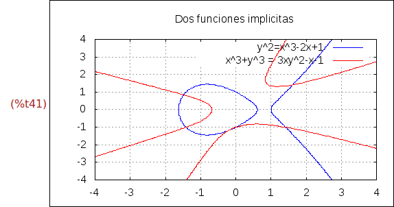
Ejercicio 2.17. Dibujar los siguientes rectángulos
* el de vértices opuestos (-2,-2) y (6,-1) en verde con los lados punteados
con grosor 6
* el de vértices opuestos (9,4) y (2,-1) en rojo con los lados de grosor 2
La ventana es la [-3,10]*[-3,4.5].
(%i42)
wxdraw2d(
line_width=6,
line_type=dots,
transparent=false,
fill_color=green,
rectangle([-2,-2],[6,-1]),
transparent=false,
fill_color=red,
line_type=solid,
line_width=2,
rectangle([9,4],[2,-1]),
xrange=[-3,10],
yrange=[-3,4.5])$

Ejercicio 2.18. Dibujar:
* la elipse de centro (0,6), semieje horizontal de longitud 3, semieje vertical
de longitud 2, ángulo inicial 270 y amplitud -270; dibujar el borde de verde
con grosor 5 y el relleno de rojo.
* la elipse de centro (2.5,6), semieje horizontal de longitud 2, semieje vertical
de longitud 3, ángulo inicial 30 y amplitud -90; dibujar el borde de azul
con grosor 5 y sin relleno.
La dimensiones de la ventana son [-3,6]x[2,9]
(%i43)
wxdraw2d(
fill_color = red,
color = green,
transparent = false,
line_width = 5,
ellipse(0,6,3,2,270,-270),
transparent = true,
color = blue,
line_width = 3,
ellipse(2.5,6,2,3,30,-90),
xrange = [-3,6],
yrange = [2,9] )$
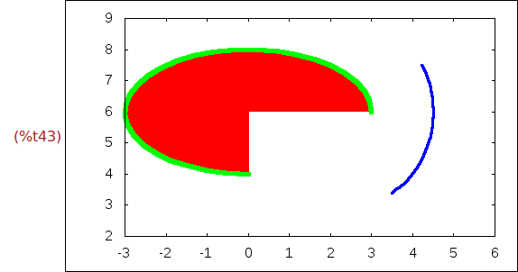
Ejercicio 2.19. Dibujar 100 puntos aleatorios en [0,10]x[0,10]. Los puntos
dibujarlos como círculos azules con grosor 2.
(%i44)
wxdraw2d(
color=blue,
point_type=filled_circle,
point_size=2,
points(makelist([random(10.0),random(10.0)],k,1,150)))$
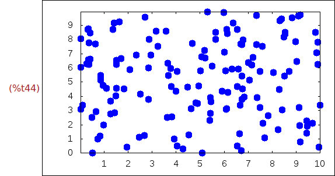
Ejercicio 2.20. Dibujar 10 puntos aleatorios en [0,10]x[0,10]. Los puntos
dibujarlos como cuadrados naranjas con grosor 3.
(%i45)
wxdraw2d(
color=orange-red,
point_type=filled_square,
point_size=3,
points(makelist(random(10.0),k,1,10),
makelist(random(10.0),k,1,10)))$
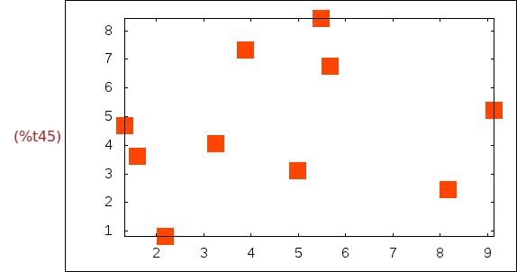
Ejercicio 2.21. Dibujar en la ventana de dimensiones [0,12]x[0,10]
* el vector de origen (0,1) y desplazamiento (5,5) con cabeza de longitud 1,
* el vector de origen (3,1) y desplazamiento (5,5) con la cabeza vacía y
* el vector de origen (6,1) y desplazamiento (5,5) con cabezas en ambos extremos
sin rellenar y punteado.
(%i46)
wxdraw2d(
xrange = [0,12],
yrange = [0,10],
head_length = 1,
vector([0,1],[5,5]),
head_type = 'empty,
vector([3,1],[5,5]),
head_both = true,
head_type = 'nofilled,
line_type = dots,
vector([6,1],[5,5]))$
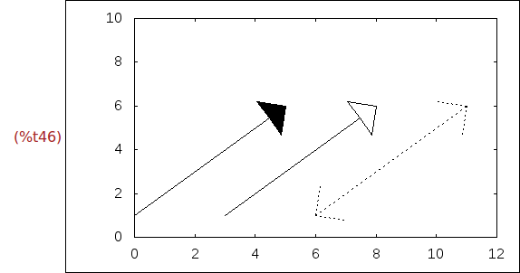
3 Animaciones gráficas
3.1 Animaciones del seno
Ejercicio 3.1. Crear una animación de la función sen(x+n), donde el parámetro n
va a tomar los valores desde 1 a 20 y el marco es [-2*pi,2*pi]x[-1.1,1.1].
(%i47)
with_slider(
n,
makelist(i,i,1,20),
sin(x+n),
[x,-2*%pi,2*%pi],[y,-1.1,1.1])$
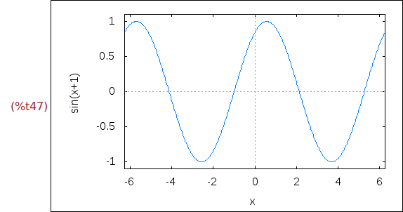
Ejercicio 3.2. Crear una animación de la función sen(x*n), donde el parámetro n
va a tomar los valores desde 1 a 20 y el marco es [-2*pi,2*pi]x[-1.1,1.1].
(%i48)
with_slider(
n,
makelist(i,i,1,20),
sin(x*n),
[x,-2*%pi,2*%pi],[y,-1.1,1.1])$
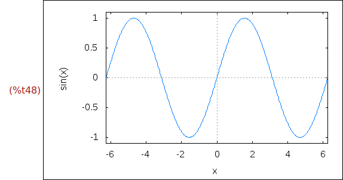
3.2 Secantes y tangentes a una parábola
Ejercicio 3.3. Definir la función f tal que f(x) = x^2/4
(%i49)
f(x):= x^2/4;

Ejercicio 3.4. Dibujar la gráfica de f.
(%i50)
wxplot2d([f(x)], [x,-5,5])$
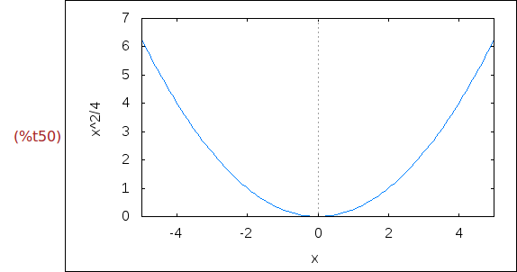
Ejercicio 3.5, Definir la función linea tal que linea(m,a) es la recta de
pendiente m que pasa por el punto (a,f(a)).
(%i51)
linea(m,a):= m*(x-a)+f(a);
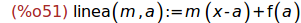
Ejercicio 3.6. Calcular linea(0.5,2)
(%i52)
linea(0.5,2);
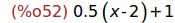
Ejercicio 3.7. Dibujar las gráficas de f y linea(0.5,2) para x entre -4 y 4.
(%i53)
wxplot2d([f(x),linea(0.5,2)], [x,-4,4])$
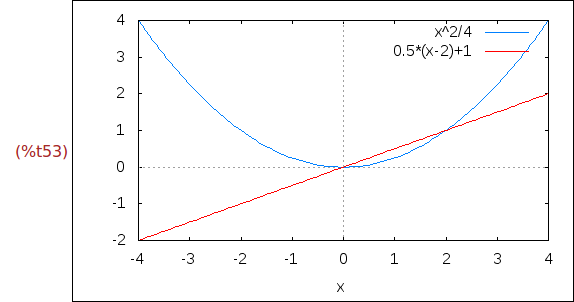
Ejercicio 3.8. Crear una animación de las funciones f(x) y linea(m,2), donde
el parámetro m va a tomar los valores -1+0.2*i para i desde 0 a 20 y el marco
es [0,4]x[-1,4].
(%i54)
with_slider(
m, /* parámetro */
makelist(-1+0.2*i,i,0,20), /* valores del parámetro */
[f(x),linea(m,2)], /* funciones a representar */
[x,0,4],[y,-1,4])$
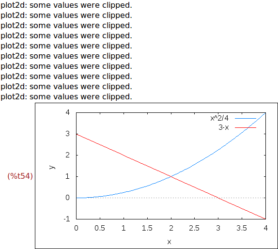
Ejercicio 3.9. Repetir la animación anterior usando with_slider_draw.
(%i55)
with_slider_draw(
m,
makelist(-1+0.2*i,i,0,20),
color=blue,
explicit(f(x),x,0,4),
color=red,
explicit(linea(m,2),x,0,4),
xrange=[0,4], yrange=[-1,4])$
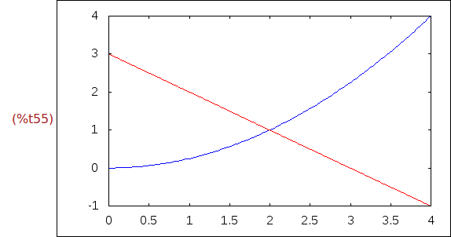
Ejercicio 3.9. Crear una animación que dibuje las tangentes a la parábola f(x).
(%i56)
with_slider_draw(
m,
makelist(-2+0.2*i,i,0,20),
color=blue,
explicit(f(x),x,-4,4),
color=red,
explicit(linea(m,2*m),x,-4,4),
xrange=[-4,4], yrange=[-1,4])$
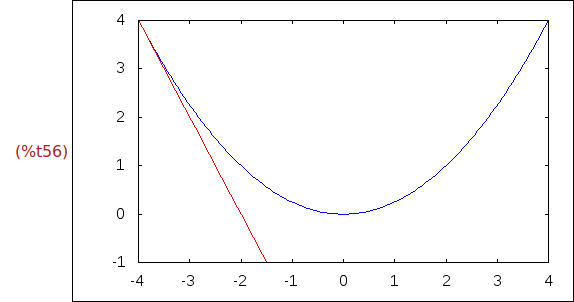
3.3 Polinomios de Taylor
Ejercicio 3.10. Definir la función f(x) = sen(x) + cos(x)
(%i57)
kill(f)$
f(x):= sin(x) + cos(x)$
Ejercicio 3.11. Definir las funciones polinomio_taylor[k], para k entre 1 y 20,
tales que polinomio_taylor[ĸ] es el polinomio de los k primeros términos del
polinomio de Taylor de f(x) en x=0. Por ejemplo,
(%i1) polinomio_taylor[7](x);
(%o1) 1+x-x^2/2-x^3/6+x^4/24+x^5/120-x^6/720-x^7/5040+...
(%i59) makelist(define(polinomio_taylor[k](x),trunc(taylor(f(x),x,0,k))),k,1,20)$
(%i60)
polinomio_taylor[7](x);
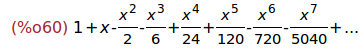
Ejercicio 3.13. Crear una animación de las funciones f(x) y
polinomio_taylor[k](x), donde el parámetro k varía desde 1 a 20 en la ventana de
dimensiones [-10,10]x[-2,3].
(%i61)
with_slider_draw(
k,
makelist(n,n,1,20),
line_width=2, color=blue, key="función",
explicit(f(x),x,-10,10),
color=red, key=sconcat("polinomio de taylor ",k),
explicit(polinomio_taylor[k](x),x,-10,10),
xaxis=true,yaxis=true,
yrange=[-3,3])$